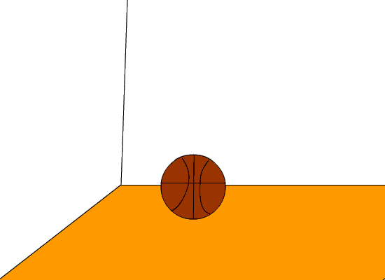

2015-2016 第二学期八年级Flash动画教学设计
作者：TeliuTe 来源：基础教程网
九、 返回目录 下一课
（一）教学设计
1、学习目标：
2、注意事项：绕过弯来，既不要跳也不要落，一楼过了二楼
3、教学过程：
1）教师准备学案和板书；
2）学生整队进入，开机抄黑板上笔记；
3）教师讲解板书演示操作；
4）学生打指法、日志、完成操作；
5）教师打勾记录学生指法成绩，检查日志和操作；
注：学生抄完笔记就开始打指法、日志，老师讲完后再继续完成；
操作图示：

（二）板书设计（课堂笔记）、课后记
40.09学会加速动画
1.三个元件，球，皮球，地板
2.地板一层，篮球一层动画
3.20帧，40帧插入关键帧
4.动画属性里输入缓动60
第9课 学会加速动画
1.新建三个元件：球，篮球，地板
2.返回场景，地板一层，20,40插关键帧
3.加一层篮球，1、20、40三个点位
4.创建动画，下边属性，缓动60、-60
5.发布设置，GIF，动画，发布
--
2016年03月24日 星期四 10:21
--
把分解动作做出来，动画的分解过程
就像做操一样的，每一步的动作给出了
--
做了这么多，把操作步骤记下来，先做什么再做什么
把制作动画的步骤记下来，原来在哪现在在哪，中间做什么
--
分两段做，看懂范例的意思
都分成两段，地板一层，篮球一层，篮球旋转、跳动，向上跳和向下落
--
篮球和地板分开，在20帧分成两段，
养成插关键帧的习惯，空白的容易错，看清了再点
--
插关键帧变成插空白帧了，前面用过一次，记得太牢
元件和场景不要混淆了，做完元件就返回
--
比上节课的要简单一些，做得容易些，可以自己做出来
分步骤做，每个元件做好，然后再做场景
返回目录 下一课
本教程由86团学校TeliuTe制作|著作权所有
基础教程网：http://teliute.org/
美丽的校园……
转载和引用本站内容，请保留作者和本站链接。